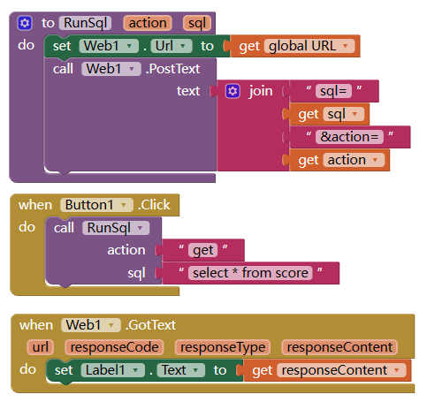

使用MySQL作为后端数据库
App Inventor 要连接MySQL数据库，一般是通过在服务器上部署一个php作为连接的接口，然后app inventor中使用http客户端连接接口，获取或发送数据。
部署php文件
将以下内容的前几行中引号内文字修改为你的参数，保存为mysql.php文件，并上传到服务器。 请注意，此代码没有充分考虑安全性，请自行进行防注入等操作。
<?php
$servername = "这里输入你的mysql地址"; //若php文件和mysql在同一服务器，可以写为localhost 或者 127.0.0.1
$username = "这里输入用户名";
$password = "这里输入密码";
$database = "这里输入数据库名";
if (isset($_REQUEST['sql'])){
$con = mysqli_connect($servername,$username,$password,$database);
if ($con){
$sql =$_REQUEST['sql'];
$sql =urldecode($sql);
$startwith = strtolower(substr($sql,0,6));
$actions = array("select", "insert","update","delete");
if (in_array($startwith,$actions)){
$result=mysqli_query($con,$sql);
if($result){
$data =array();
if($startwith =="select"){
$array = array();
$inum = 0;
while ($row=mysqli_fetch_assoc($result)){
$array[$inum]=$row;
$inum++;
}
$data['result'] = $array;
}
$data['affected'] = mysqli_affected_rows($con);
if (isset($_REQUEST['action'])){
$data['action'] = $_REQUEST['action'];
}
$return = json_encode($data);
header("HTTP/1.1 200 OK");
echo $return;
}
else{
header( "HTTP/1.1 400 Bad Request" );
echo '{"error":"sql parse failed"}';
}
}else{
header( "HTTP/1.1 400 Bad Request" );
echo '{"error":"action not recognized"}';
}
}else{
header("HTTP/1.1 500 Internal Server Error");
echo '{"error":"connection failed"}';
}
mysqli_close($con);
}
else{
header( "HTTP/1.1 400 Bad Request" );
echo '{"error":"no sql specified"}';
}
?>
请求参数
请求接受两个参数，
- 一个是sql（必填），就是你要执行的sql语句（一次请求只能有一条sql语句）。为安全起见，以上代码只支持增改删查四项动作。
- 一个是action (可选)，如果你有多条sql要执行，就需要多次执行post请求，可以用此参数区别sql所执行的操作，他会在返回数据中原样返回，
请求方法
推荐post方法
返回结果
- 返回结果是json格式。类似于：
{
"result": [
{
"id": "1",
"xingming": "zhang san",
"xingbie": "nan",
"shuxue": "89",
"yuwen": "68"
}
],
"affected": 1,
"action": "get"
}
- 若有错误发生，返回值中会有error字段。
- 若没有错误，返回值中总会有affected字段，表明返回数据或者受到影响(添加或者修改或者删除)的数据条数。
- 若为select操作，返回值还包含result字段，包含所有返回记录的数组。
使用Web客户端与服务器交互
